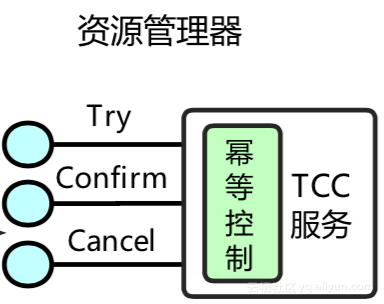

分布式事务之TCC服务设计和实现注意事项！
一、TCC简介
TCC是一种比较成熟的分布式事务解决方案，可用于解决跨库操作的数据一致性问题；
TCC是服务化的两阶段编程模型，其Try、Confirm、Cancel 3个方法均由业务编码实现；
其中Try操作作为一阶段，负责资源的检查和预留，Confirm操作作为二阶段提交操作，执行真正的业务，Cancel是预留资源的取消；
如下图所示，业务实现TCC服务之后，该TCC服务将作为分布式事务的其中一个资源，参与到整个分布式事务中；事务管理器分2阶段协调TCC服务，在第一阶段调用所有TCC服务的Try方法，在第二阶段执行所有TCC服务的Confirm或者Cancel方法；

二、用户在实现TCC服务时，有以下注意事项
1、业务操作分两阶段完成：
如下图所示，接入TCC前，业务操作只需要一步就能完成，但是在接入TCC之后，需要考虑如何将其分成2阶段完成，把资源的检查和预留放在一阶段的Try操作中进行，把真正的业务操作的执行放在二阶段的Confirm操作中进行；

TCC服务要保证第一阶段Try操作成功之后，二阶段Confirm操作一定能成功；
2、允许空回滚；
如下图所示，事务协调器在调用TCC服务的一阶段Try操作时，可能会出现因为丢包而导致的网络超时，此时事务协调器会触发二阶段回滚，调用TCC服务的Cancel操作；
TCC服务在未收到Try请求的情况下收到Cancel请求，这种场景被称为空回滚；TCC服务在实现时应当允许空回滚的执行；

3、防悬挂控制；
如下图所示，事务协调器在调用TCC服务的一阶段Try操作时，可能会出现因网络拥堵而导致的超时，此时事务协调器会触发二阶段回滚，调用TCC服务的Cancel操作；在此之后，拥堵在网络上的一阶段Try数据包被TCC服务收到，出现了二阶段Cancel请求比一阶段Try请求先执行的情况；
用户在实现TCC服务时，应当允许空回滚，但是要拒绝执行空回滚之后到来的一阶段Try请求；

4、幂等控制：
无论是网络数据包重传，还是异常事务的补偿执行，都会导致TCC服务的Try、Confirm或者Cancel操作被重复执行；用户在实现TCC服务时，需要考虑幂等控制，即Try、Confirm、Cancel 执行次和执行多次的业务结果是一样的；

5、业务数据可见性控制；
TCC服务的一阶段Try操作会做资源的预留，在二阶段操作执行之前，如果其他事务需要读取被预留的资源数据，那么处于中间状态的业务数据该如何向用户展示，需要业务在实现时考虑清楚；通常的设计原则是“宁可不展示、少展示，也不多展示、错展示”；
6、业务数据并发访问控制；
TCC服务的一阶段Try操作预留资源之后，在二阶段操作执行之前，预留的资源都不会被释放；如果此时其他分布式事务修改这些业务资源，会出现分布式事务的并发问题；
用户在实现TCC服务时，需要考虑业务数据的并发控制，尽量将逻辑锁粒度降到最低，以最大限度的提高分布式事务的并发性；
三、总结
蚂蚁金服使用TCC有10年历史，在TCC应用方面积累了大量实践经验；除了上述TCC服务的设计注意事项外，我们在解决用户高并发、高可用需求方面也提供了解决方案，我们对分布式事务做了极致的性能优化以支持双11等大促的高并发需求，我们基于蚂蚁LDC架构的高可用方案能使分布式事务服务达到99.99%的可用性；
蚂蚁金服大部分业务系统均采用TCC的方式接入分布式事务，但设计TCC服务时要遵循大量设计规范，这无疑对用户提了非常高的要求；为了简化用户接入分布式事务的门槛，蚂蚁金服的分布式事务框架（SOFA-DTX）推出了FMT（Framework-managed transactions）模式和XA模式，这两种模式均不需要用户实现TCC服务，用户只需要关注自身业务SQL便可；DTX的三种模式：TCC、FMT和XA相互之间是功能互补，相辅相成的，形成了蚂蚁金服完善的分布式事务解决方案。
SOFA-DTX全面覆盖金融场景，金融级容灾保障、提供丰富的接入模式并且使用简洁易于接入；目前已经应用在支付宝、网上银行、蚂蚁财富、芝麻信用、南京银行等项目中。
点击图片查看更多推荐内容
↓↓↓

2018整理最全的50道Redis面试题！

如何避免自己写的代码成为别人眼中的一坨屎！

为什么分布式一定要有Redis?

聊聊阿里面试的三个层次！